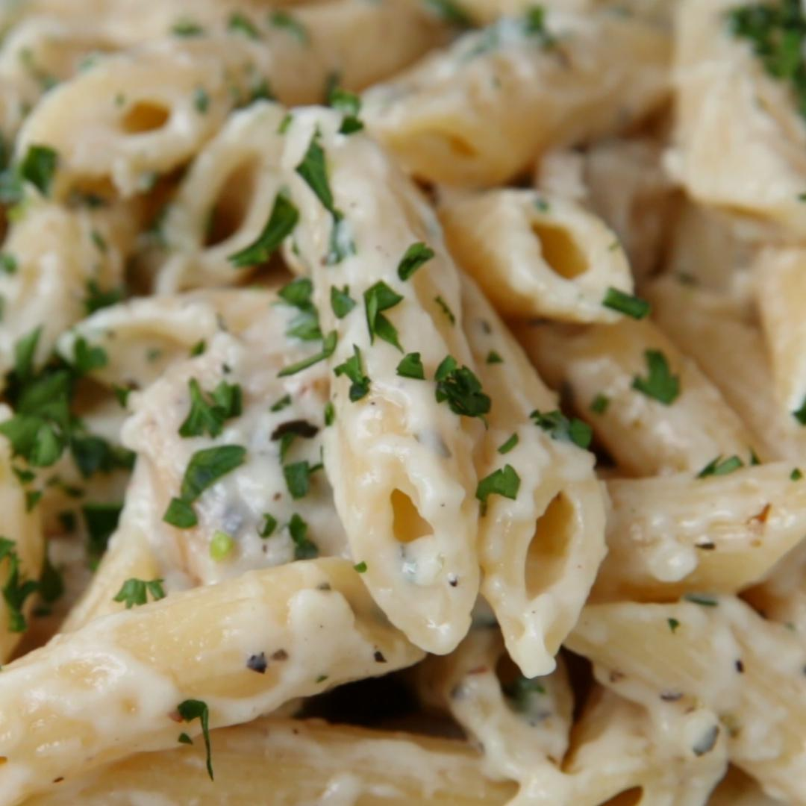

Chicken Alfredo Penne

Description
"Nothing spells comfort like Italian food. Steaming bowls of pasta, buttery, roasted garlic bread, and tureens of the most flavorful sauces: it’s all right there. Sometimes, you want to bring that comfort into your very own kitchen and, well, we’ve got just the recipe for you. This easy chicken alfredo penne will have you saying ‘mangia!’ before you even know it." -Claire Nolan
Ingredients (6 servings)
Chicken and Pasta
- 1 1/2 lb chicken breast (680g), cubed
- 2 tbsp butter
- 1/2 tsp dried oregano
- 1/2 tsp dried basil
- 1/2 tsp salt
- 1/2 tsp pepper
- 16 oz penne pasta (455g), cooked
- 1/4 fresh cup parsley (10g)
- 1/4 cup shredded parmesan cheese (25g)
Sauce
- 2 tbsp butter
- 4 cloves garlic, minced
- 3 tbsp flour
- 2 cups milk (480mL)
- 1/2 tsp dried oregano
- 1/2 tsp dried basil
- 1/2 cup shredded parmesan cheese (55g)
- 1/2 tsp salt
- 1/2 tsp pepper
Steps
- In a pan over medium-high heat, melt butter, then add the chicken breast.
- Season with salt, pepper, oregano, and basil. Cook 8-10 minutes or until chicken is fully cooked. Remove from heat and set chicken aside.
- In the same pan over medium heat, melt butter and add the garlic. Cook until the garlic begins to soften.
- Add half of the flour to the garlic and butter, stirring until incorporated. Then add the rest of the flour and stir.
- Pour in the milk a little bit at a time, stirring well in between, until fully incorporated and sauce begins to thicken.
- Season with salt, pepper, oregano, and basil, and stir well to incorporate.
- Add parmesan cheese and stir until melted.
- Pour the sauce over cooked penne pasta, add the chicken and mix well.
- Add parsley and extra parmesan. Mix well.
- Enjoy!
Nutrition facts: Calories 573, Fat 16g, Carbs 64g, Fiber 2g, Sugar 6g, Protein 40g
Source